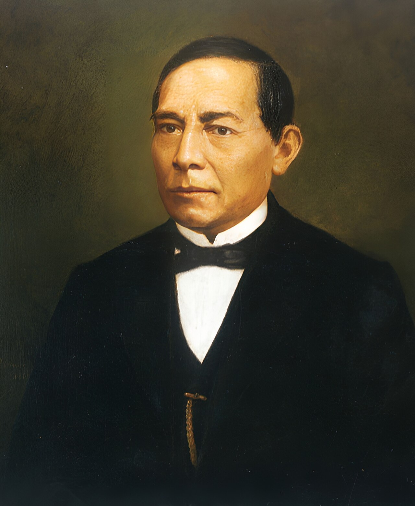

El presidente Benito Juárez nació el 21 de marzo de 1806 en San Pablo Guelatao, Oaxaca. Fue un político mexicano indígena y abogado, parteaguas para un gran cambio en la historia de México gracias a la Constitución de 1857 y la Guerra de Reforma. Después de ocupar los cargos de gobernador del estado de Oaxaca y presidente de la Suprema Corte de Justicia de la Nación, ocupó la Presidencia de México de 1858 a 1872. También conocido como Benemérito de las Américas por su lucha contra la invasión francesa, Benito Juárez estableció las bases sobre las que se funda el Estado laico y la República federal en México.
Listado de fiestas por el 21 de marzo